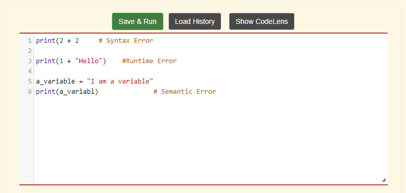

Chapter 3: Debugging
What is a bug in programming?
A bug in programming is just an error. There are a few types of bugs/errors to keep an eye on, such as:
- Syntax Errors: Is when there is an error in the structure(the way that it has to be written) of the code. Think of it like reading a paragraph without punctuation, or commas, or even the first letter of a sentence not being capitalized. Now, some examples include, forgetting to close parenthesis or quote marks, and misspelling the variable name.
- Runtime Errors: Is when the computer or machine can not execute the code that was input. Think of it like assigning a fashion design student to write a thesis paper on Quantum Physics, when they don't have any knowledg on the subject. This would be really hard for them to do, possibly impossible. Which is basically the same when the programmer tells the computer/machine to add an integer and string together. This will give a runtime error, because both data types are different from one another. In order to add two different data types, they have to be similar, such as floats and integers, they are similar because they are both numbers. Or the alternative method is data type conversion.
- Semantic Error: Is when the end result of the program does not match with the programmer's desired result. So, think of it like ordering take out, and then checking your order, and finding that instead of your order having fried rice, it has stir fry. You ask the cashier why they are giving you the wrong order, but the cashier reminds you that you ordered stir fry, instead of fried rice. So, you made the error not the cashier or the computer/machine, in this case.
